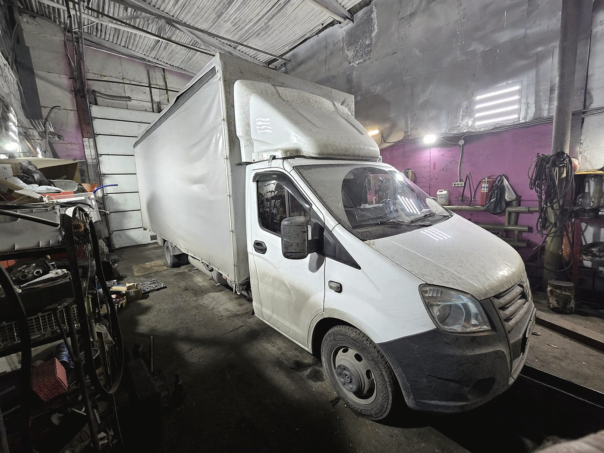
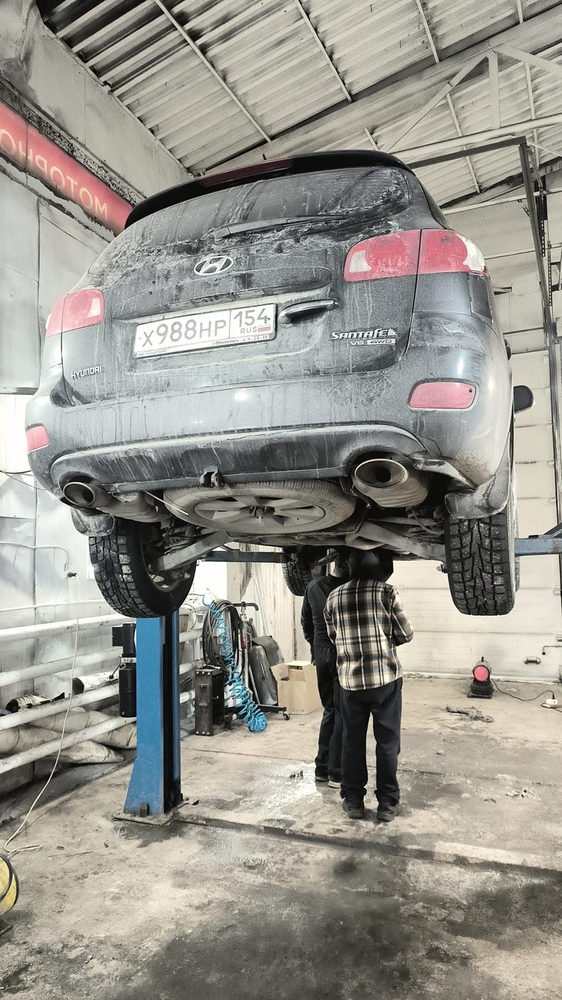
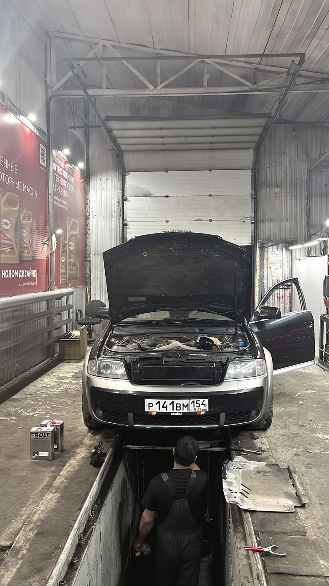
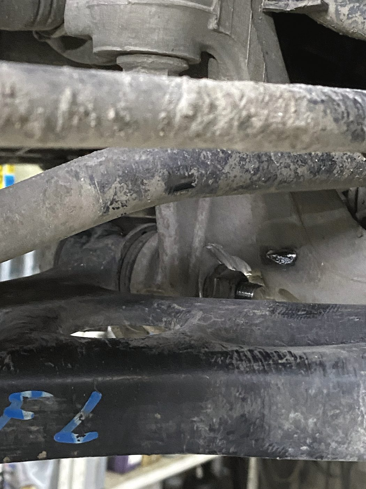
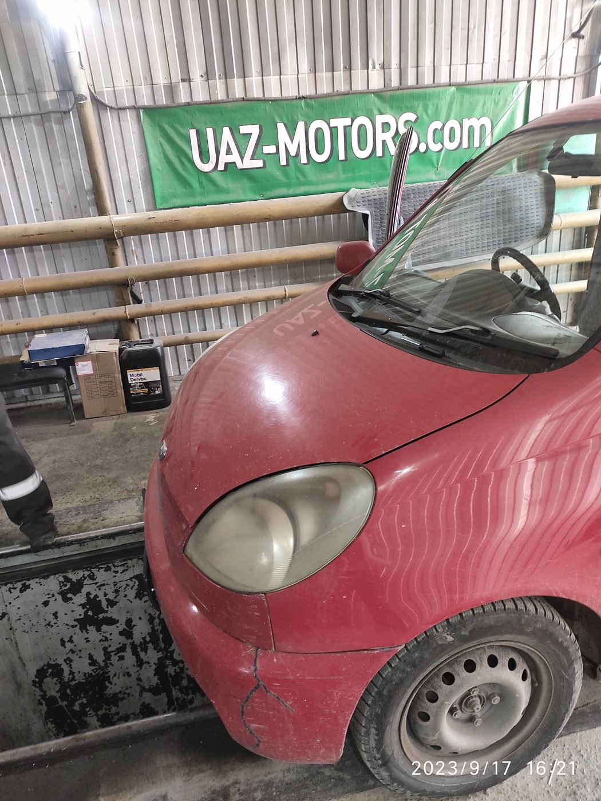
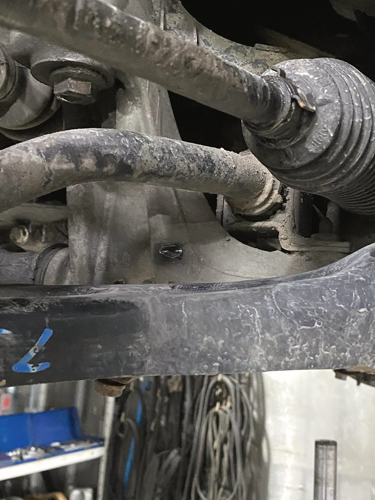
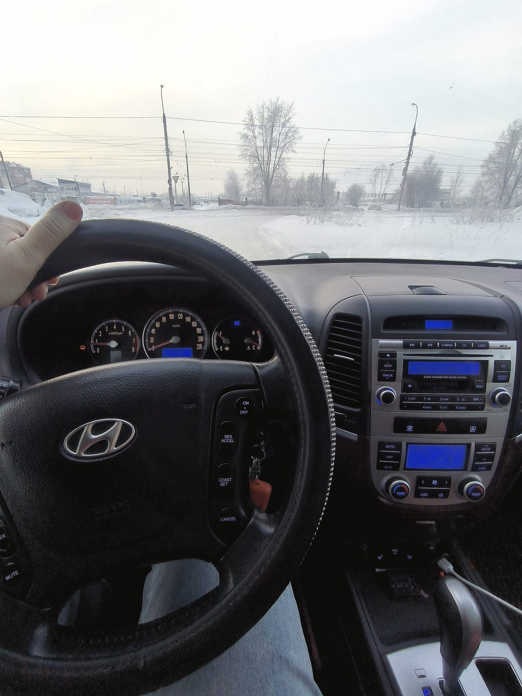

Автосервис · Петухова, 17д к4 · Новосибирск
Открыто всегда.
Даже в три часа ночи
Круглосуточно, без выходных и праздников. Легковые, грузовые, автобусы и спецтехника — от Жигулей до автокрана. Свой моторный цех со станками и магазин масел прямо на территории.
00:00Ни одного закрытого часа в сутках24:00

Что берём
От Жигулей
до автокрана
Редкий сервис берёт и легковую, и фуру, и погрузчик. Здесь для этого есть и высокие ворота, и станки, и люди, которые помнят карбюратор.
Иномарки и отечественные. Двигатель, ходовая, коробка, электрика, кузовной, рулевые рейки, кондиционер.
Более пятидесяти марок: КамАЗ, МАЗ, ГАЗ, Scania, MAN, Volvo, DAF, IVECO, Hino, Isuzu, Howo, Shacman и другие.
Пассажирская техника — отдельное направление, за которое берутся немногие.
Автокраны, погрузчики, бетономешалки. Диагностика и ремонт на месте.
Моторный цех
Блок обрабатывают здесь,
а не «на стороне»
Большинство сервисов при серьёзном ремонте двигателя отвозят блок на чужие станки — это дни ожидания и чужая ответственность. У нас станочные работы делаются на месте.
- Расточка блока цилиндров под ремонтный размер
- Гильзовка, когда расточка уже не спасает
- Шлифовка плоскостей головки и блока после перегрева
- Опрессовка на трещины — до сборки, а не после
- Дизельная топливная аппаратура: форсунки, ТНВД
- Ремонт турбин и карбюраторов
Работы
Что делаем
Двигатели, бензин и дизель
От замены прокладки до капитального ремонта со станочными работами.
Дизельная аппаратура и турбины
Форсунки, ТНВД, магистрали, ремонт турбокомпрессоров.
Карбюраторы и инжекторы
Переборка и регулировка. Для старой техники это часто единственный вариант — и человек, который умеет, у нас есть.
АКПП и МКПП
Ремонт и обслуживание коробок легковых и грузовых машин.
Ходовая часть
Стойки, рычаги, пневмоподвеска, проточка тормозных дисков.
Рулевые рейки и карданы
Ремонт узлов: рейки, карданные валы, крестовины, подвесные.
Кузовной ремонт и сварка
Сварочные работы, ремонт кузова, покраска. Есть автоэмали.
Стартеры, генераторы, аккумуляторы
Ремонт узлов и подбор аккумулятора на месте.
Подушки безопасности
Восстановление системы после срабатывания — редкая работа.
Магазин масел и автохимии
Масла на розлив, спецжидкости, автокосметика. Продавец подберёт по машине — в отзывах это отмечают отдельно.
Аренда тёплого бокса
Если хотите сделать что-то сами — можно арендовать пост в тепле.



Отзывы · 4,9 из 5 по 303 оценкам в 2ГИС
«Ехал в Томск, машина закапризничала. Карбюраторщик нашёл причину и устранил при нас. До Томска доехали»
Сергей Гутов · 10 августа 2026 · транзитом через Новосибирск
Обращался, чтобы освежить покраску машины и заодно провести обслуживание. Продавцы очень вежливые и внимательные, помогли безошибочно подобрать моторное масло и другие жидкости. Мастера выполнили работу аккуратно и быстро.
Василий Еремеев · 19 июля 2026
Продавец-консультант подобрал нужную спецжидкость по рекомендации. Механик провёл замену быстро, без следов грязи. Мотор работает ровно, шум заметно уменьшился.
Герасим Парохин · 8 июля 2026



Контакты
Петухова, 17д к4
Кировский район, Новосибирск